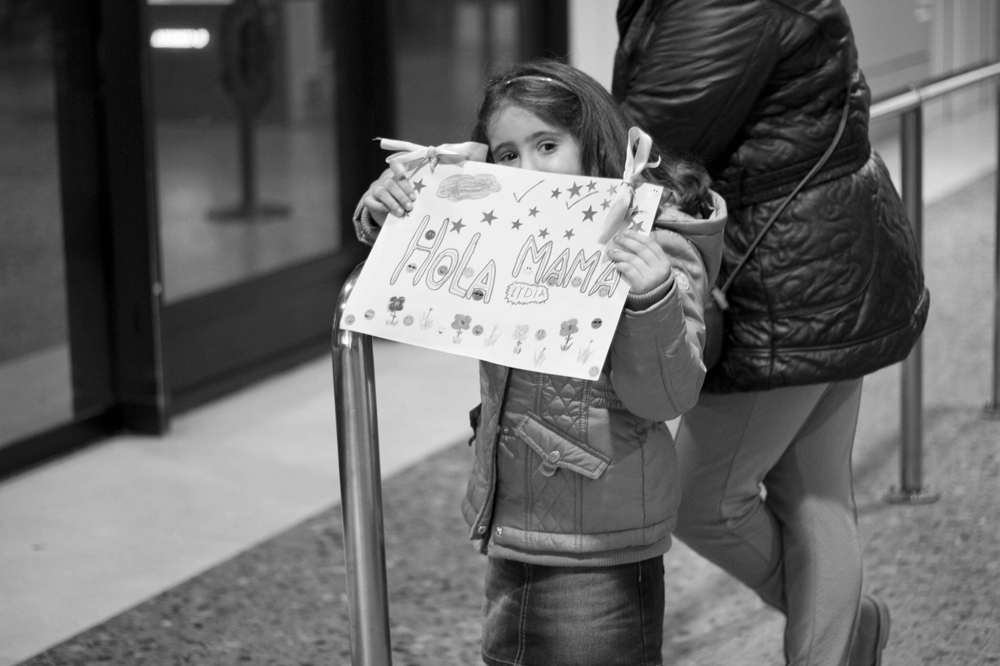

03Salidas-Esperas-Llegadas
Reportaje urbano
Estaciones y Aeropuerto de Asturias
Salidas , Esperas, Llegadas
Muchos de mis recuerdos felices durante toda mi infancia sucedieron en el aeropuerto. Recuerdo ir a buscar a mi padre al aeropuerto, después de cuatro meses sin verle, la espera, el nerviosismo, el aburrimiento, hasta que llegaba, lo veía bajar del avión con la nariz pegada al cristal y mi mundo se convertía en él. Sólo estaba en casa los siguientes dos meses, por eso atesoraba cada momento con él, intentando no pensar en cuando se iría, porque se iría. No recuerdo despedidas en el aeropuerto, se despedía en casa, su vuelo salía pronto. Recuerdo una vez que no se despidió, me dio un beso mientras dormía, pero yo no lo recordaba, lloré tanto que mi madre me perdonó el desayuno.
Ahora ya soy mayor, las campañas son mas cortas y las rutas mas cercanas pero siempre que desenbarca recuerdo cuando íbamos al aeropuerto a buscarle. Ya no busco a mi padre en el aeropuerto, ya no le espero en la estación, ahora le espero a él, mantengo una relación a distancia desde hace dos años, nos vemos poco, pero nos vemos. Recorro cientos de kilometros en un autobús para reencontrarnos en una estación, el espera mis llegadas y yo las suyas. Y vuelvo a pasar por todo, la espera , el aburrimiento, el nerviosismo y finalmente la felicidad que siento cuando lo veo bajar del autobús. Voy, corro y lo abrazo, me convierto en una de esas personas a las que tanto fotografío.
Pero al igual que en mis imágenes llega el momento de la despedida, el momento de decir adiós, de darse el último beso y subir al tren, de verle irse con lagrimas en los ojos hasta nuestro próximo reencuentro. Eso he intentado reflejar en mis imágenes , proyectar en ellas lo que yo sentía y siento, mis propias salidas, esperas, y llegadas.

“Los aeropuertos son los lugares mas felices y lo mas tristes, feliz por el que viene, triste por el que se va.”
Sara Heres
Aeropuerto de Asturias
Aeropuerto de Asturias
Estación de autobuses de Oviedo
Aeropuerto de Asturias
Aeropuerto de Asturias
Estación de autobuses de Oviedo
Aeropuerto de Asturias